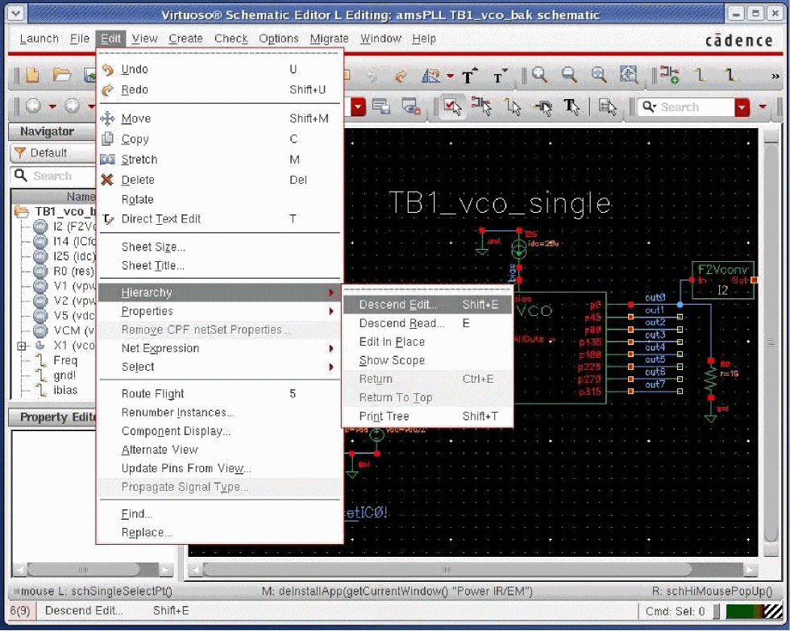
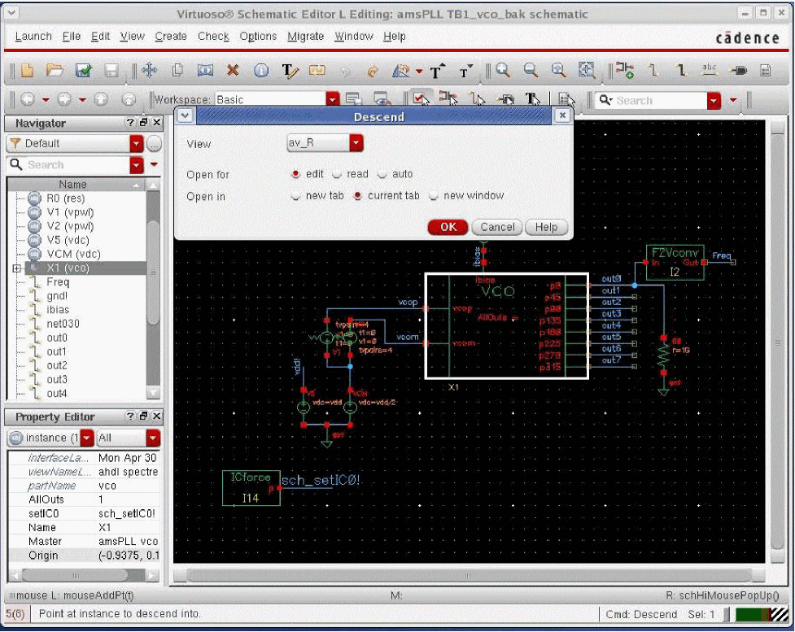
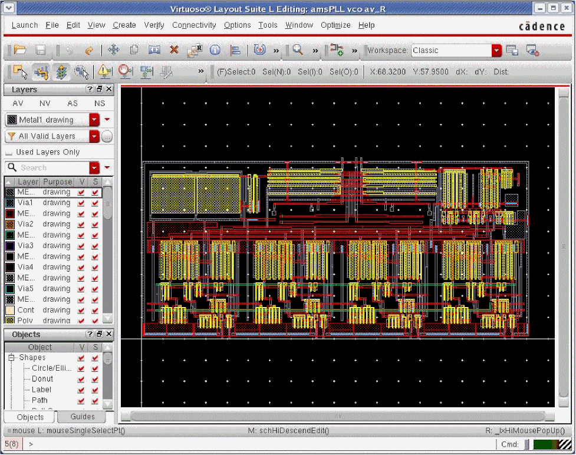
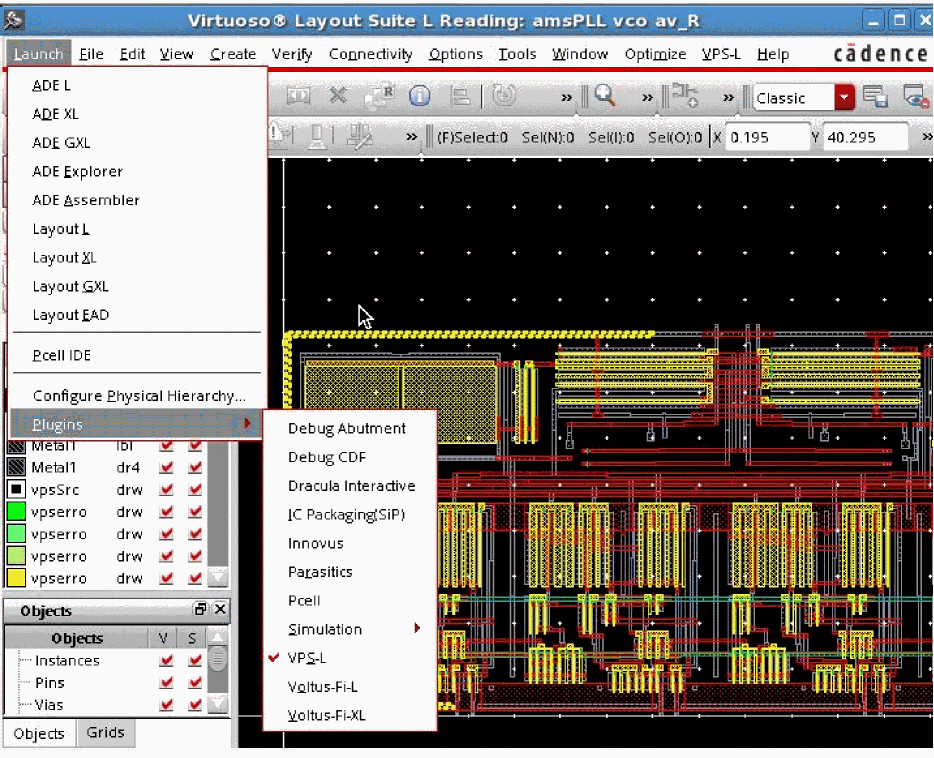

2
Getting Started
- Product and Installation Information
- Supported and Compatible Platforms
- Specifying the 64-Bit or 32-Bit Version of Virtuoso Power System Applications
- Starting the Software
- Log Files for Power IR/EM
- Accessing Documentation and Help
Product and Installation Information
The Virtuoso Power System (VPS) products are launched within the Virtuoso Platform. To use these products, you must have the Virtuoso® IC 12 release version.
To check whether the VPS products are available in your Virtuoso® Design Environment, type the following in the unix, shell, or xterm window:
This prints the version of Power IR/EM available in your Virtuoso Design Environment.
For basic information and procedures required to install Cadence® products, see the Cadence Installation Guide.
For information about how to configure the Virtuoso Design Environment, see “Setting up the Virtuoso Software”, in the Virtuoso Software Licensing and Configuration User Guide.
Supported and Compatible Platforms
This product is supported on the following platforms:
Specifying the 64-Bit or 32-Bit Version of Virtuoso Power System Applications
You can run Power IR/EM in both 32-bit and 64-bit modes. The 32-bit version and 64-bit version of the software are installed in the same tools hierarchy.
By default, the software runs in the 32-bit mode, if it is available. To specify the 64-bit version, you need to set the CDS_AUTO_64BIT environment variable before starting the software. For more information, see the section below.
Using the CDS_AUTO_64BIT Environment Variable
To run 64-bit versions of all or some applications, complete the following steps before starting the software:
-
If you are using the
lnx86operating system, verify that it supports 64-bit applications. -
Set the
CDS_AUTO_64BITenvironment variable.
For example,
Starting the Software
You can run Power IR/EM interactively from the GUI or you can execute it as a batch command. But before you run Power IR/EM, you need to extract parasitic resistance and capacitance from the power and ground nets, create extracted views of the design, and simulate these views. For more information, see the “
Running Power IR/EM from the GUI
To run Power IR/EM in the Virtuoso Design Environment, you will be performing the following tasks:
- Starting the Virtuoso Design Environment
- Using the CIW to Open the Virtuoso® Schematic Editor L
- Descending into Design Hierarchy
- Running Power IR/EM
Starting the Virtuoso Design Environment
Once you have set up the Virtuoso Design Environment, you can start Virtuoso by typing the following in the unix, shell, or xterm window:
The Command Interpreter Window (CIW) opens. You interact with the design environment from the CIW.
Figure 2-1 Command Interpreter Window (CIW)
The title bar of the CIW contains the following information:
-
The name of the workbench you are running (for example,
virtuoso) - The path to the log file (CDS.log) that records the ongoing events of the design session
The content of the log file is displayed in the output area.
Using the CIW to Open the Virtuoso® Schematic Editor L
You can use the CIW to open the schematic view of the design you want to analyze. From the Main menu, you can either use the Tools menu or the File menu to access your design.
Using the File Menu
For information about how to open the schematic view of Virtuoso from the File menu in the CIW, see, “
Using the Tools Menu
To open the schematic view of the design from the Tools menu, choose Tools – Library Manager. This is shown below.
Figure 2-2 Command Interpreter Window – Opening the Library Manager Form
The Library Manager form opens. This is shown below.
Figure 2-3 Library Manager Form
For more information on the Library Manager, see the Cadence Library Manager User Guide.
Opening a Schematic View in the Library Manager
In the Library Manager form, you can choose to display library information (library, cell, view, file, category) using either list boxes (in View – Lists mode) or a hierarchical tree structure (in View - Tree mode).
The information provided below is for Views – Lists mode.
To select a library and its corresponding cell and view on the Library Manager form, click the item names in the order: Library, Cell, and View. You can select a specific item that is not visible in the list box by typing the first part of the name in the active field at the top of the list box. As you type, the list scrolls to any matching names. This is shown below.
Figure 2-4 Library Manager – Opening the Schematic View of a Design
Once you have selected the schematic view, doubleclick the view to open the design in Virtuoso Schematic Editor L. This is shown below.
Figure 2-5 Virtuoso Schematic Editor – Displaying the Design
Descending into Design Hierarchy
In the Schematic Editor, before you run Power IR/EM, you need to descend into the design hierarchy. A design hierarchy consists of many levels of a single design. When you descend into the design hierarchy, you view the extracted layout of the design you want to analyze.
To descend into the design hierarchy, follow these steps:
-
In the Virtuoso Schematic Editor L, choose Edit – Hierarchy – and Descend Read. You can choose the Descend Edit option if you need to make any change in the extracted layout.
Figure 2-6 Virtuoso Schematic Editor L – Descending into Design Hierarchy -
Use the pointer to select the instance to which you want to descend. The Descend form opens.
Figure 2-7 Descend Form – Selecting the Design View -
In this form, select the name of the extracted view from the options provided in the View cyclic field. In the example shown in the figure above, the extracted view is
av_r. - Click read to open the extracted view for reading. You can select edit if you want to modify something in the extracted view.
- Choose where you want to open the extracted view by selecting Open in – new tab, current tab, or new window.
- Click OK.
-
The selected view of the instance opens in Virtuoso® Layout Suite L. This is shown in the figure below.
Figure 2-8 Virtuoso Layout Suite L – Displaying the Selected Design View
Running Power IR/EM
Once you have opened the detailed view of the selected instance of the design, you can run Power IR/EM by activating the VPS-L menu option in the Main menu of the Virtuoso® Layout Suite L.
To activate the VPS-L menu, perform the following steps:
-
In the Virtuoso Layout Suite, choose Launch – Plugins – VPS-L.
Figure 2-9 Virtuoso Layout Suite - Running Power IR/EM -
The VPS-L menu option appears in the Main menu of the Virtuoso Layout Suite L. This is shown below.
Figure 2-10 Virtuoso Layout Suite L - VPS-L Menu
Running Power IR/EM in Batch Mode
You can run Power IR/EM as a batch command, running from Virtuoso in no-graph mode. Batch mode is typically used to perform the initial pass/fail analysis of the design’s power-grid networks.
Once you have run the analysis in batch mode, you can use the interactive GUI to view and analyze the results of the analysis.
Batch Command Syntax
The batch mode is executed from the unix, shell, or xterm window as follows:
<cmd_file> is a list of VPS commands that define the input data, control the execution of analysis, and select the output location.
For more information on Batch commands and the sample command file, see the “
Log Files for Power IR/EM
When you run Power IR/EM either in the GUI or in the batch mode, a standalone log file is created to record the complete Power IR/EM session. This file is created in addition to the CDS.log file that records the ongoing events of the design session in Virtuoso. This Power IR/EM-specific log file is saved in the following location by default.
For each session, a new log file is created, such as VSA.LOG.1, VSA.LOG.2, and so on. You can save up to twenty log files, after which the last log file, VSA.LOG.20, will be overwritten in subsequent sessions.
A sample log file is shown below.
#This is a tool generated log file and contains log for the entire VPS session
LOG FILE CREATED: "Apr 30 11:44:16 2014"
LOG FILE VERSION: 1.0
STARTED IR Drop Analysis
VSA CONTEXT VERSION = v10.10-dev.rosingh
Command file parsed Successfully
License "Virtuoso_Power_System_L" exists
Checkout of license "Virtuoso_Power_System_L" was successful
Running IR Drop Analysis
STARTING TO GET NETS AND INSTANCES ...
FINISHED in 0 hours 0 minutes 0 seconds
MEMORY USAGE 0.00 MB
STARTING TO FIND THE DEVICES CONNECTED TO THE NETS ...
FINISHED in 0 hours 0 minutes 0 seconds
MEMORY USAGE 0.30 MB
STARTING TO CALCULATE THE SIMULATION RESULTS ...
INFO: ** loadNetlist command done ( time 0 sec )
STATUS: instances (analyzed: 312 failed: 12 total: 312 )
WARNING: 12 instances failed, please see the log file.
INFO: ** run command done ( time 0 sec )
FINISHED in 0 hours 0 minutes 1 seconds
MEMORY USAGE 27.37 MB
STARTING TO WRITE THE IRDROP RESULTS ...
You specified an existing file "/home/rosingh/work/IRDrop.results".
Overwriting?
Successfully wrote IR drop results to
"/home/rosingh/work/IRDrop.results"
FINISHED in 0 hours 0 minutes 1 seconds
MEMORY USAGE 0.00 MB
TOTAL TIME WAS 0 hours 0 minutes 2 seconds
TOTAL MEMORY USAGE WAS 38.43 MB
Accessing Documentation and Help
You can access the Power IR/EM documentation and help system using the following methods:
- Launching Cadence Help from the Command Prompt
- Accessing Documentation and Help from the GUI
- Other Source of Information
Launching Cadence Help from the Command Prompt
-
Change to the following directory:
installation_dir/tools/bin -
Enter the following command:
./cdnshelp
After launching Cadence® Help, press F1 or choose Help – Contents to display the help page for Cadence Help.
For more information see the
Accessing Documentation and Help from the GUI
The software provides the following two methods to access documentation and help from the GUI:
- Select Help on the Main Menu of the Virtuoso® Layout Suite L.
- Open the Documentation Browser. A list of all Virtuoso documents appears.
- Choose Virtuoso Power System – Power IR/EM User Guide. This opens the Table of Contents page of the user guide.
Select Help on a Power IR/EM Form
Click the Help button on the bottom right corner of a form.
- Clicking the Help button opens the Power IR/EM user guide entry for the form in the Cadence Help window.
Other Source of Information
You can also get help on Cadence products by selecting Customer Support on the Help menu. The Customer Support submenu provides access to the following Cadence resource:
Return to top